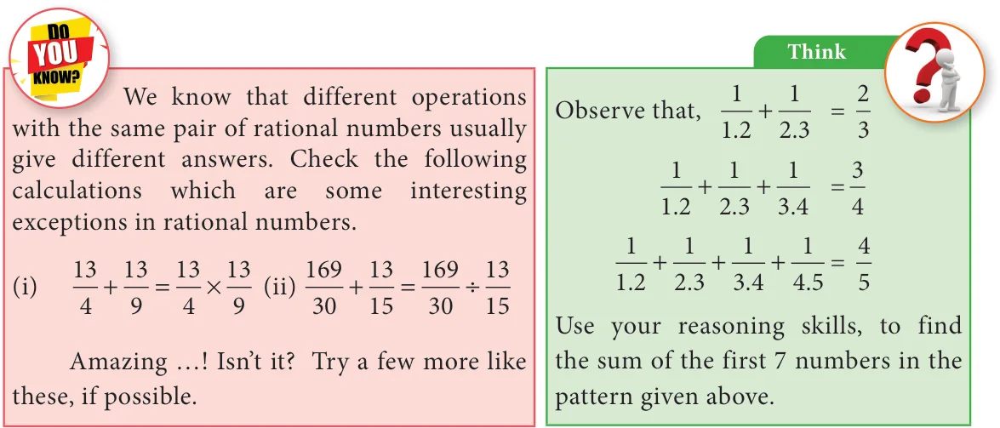

- Verify the closure property for addition and multiplication for the rational numbers \(\frac{-5}{7}\) and \(\frac{8}{9}\).
- Verify the commutative property for addition and multiplication for the rational numbers \(\frac{-10}{11}\) and \(\frac{-8}{33}\).
- Verify the associative property for addition and multiplication for the rational numbers \(\frac{-7}{9}, \frac{5}{6}\) and \(\frac{-4}{3}\).
- Verify the distributive property \(a \times (b + c) = (a \times b) + (a + c)\) for the rational numbers \(a = \frac{-1}{2}\), \(b = \frac{2}{3}\) and \(c = \frac{-5}{6}\).
- Verify the identity property for addition and multiplication for the rational numbers \(\frac{15}{19}\) and \(\frac{-18}{25}\).
- Verify the additive and multiplicative inverse property for the rational numbers \(\frac{-7}{17}\) and \(\frac{17}{27}\).
Objective Type Questions
- Closure property is not true for division of rational numbers because of the number
(A) 1 (B) \(-1\) (C) 0 (D) \(\frac{1}{2}\) - \(\frac{1}{2} - \left(\frac{3}{4} - \frac{5}{6}\right) \neq \left(\frac{1}{2} - \frac{3}{4}\right) - \frac{5}{6}\) illustrates that subtraction does not satisfy the \(\underline{\qquad}\) property for rational numbers.
(A) commutative (B) closure (C) distributive (D) associative - Which of the following illustrates the inverse property for addition?
(A) \(\frac{1}{8} - \frac{1}{8} = 0\) (B) \(\frac{1}{8} + \frac{1}{8} = \frac{1}{4}\) (C) \(\frac{1}{8} + 0 = \frac{1}{8}\) (D) \(\frac{1}{8} - 0 = \frac{1}{8}\) - \(\frac{3}{4} \times \left(\frac{1}{2} - \frac{1}{4}\right) = \frac{3}{4} \times \frac{1}{2} - \frac{3}{4} \times \frac{1}{4}\) illustrates that multiplication is distributive over
(A) addition (B) subtraction (C) multiplication (D) division
